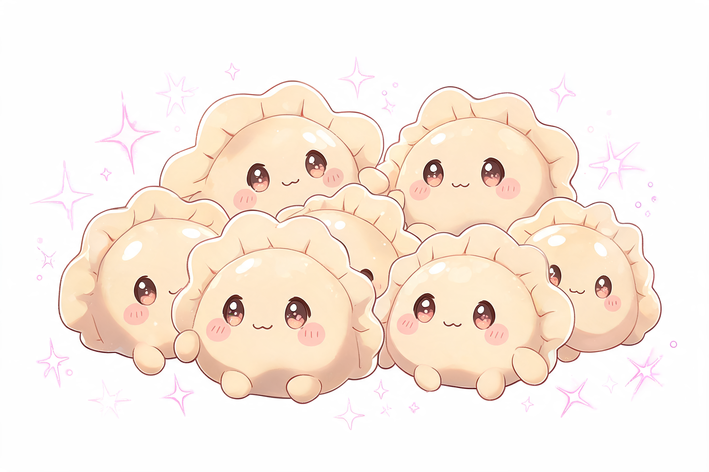

(◕‿◕✿) ~ Let’s make fluffy little Russian dumplings together!

(｡•̀ᴗ-)✧
(•̀ᴗ•́)و Anime determination eyes
In a big bowl, mix flour + salt. Make a tiny volcano crater ⛰️, crack the egg inside, add oil + water. Mix with chopsticks (or hands hehe). Knead until smooth and soft like mochi skin. Sugēēē!! (ﾉ◕ヮ◕)ﾉ
Let it rest under a wet towel for 30 mins — it’s taking a cute nap! zzz (－‿－✿)
Mix minced meat + onion + salt + pepper in a bowl. Add iced water and mix with chopsticks until sticky and shiny. WOOOOW it smells like victory (๑˃ᴗ˂)ﻭ
Roll dough super thin (like anime character’s patience hehe). Cut circles with a cup (5 cm wide). WAAAAA PERFECT CIRCLES!
Put a small ball of meat in the center. Fold into half-moon, pinch edges tightly. Then connect the two corners — now it looks like a tiny adorable ear! KYAAA SO CUTE!! (//>/ ▽ /<//)
Drop pelmeni into boiling salted water. Stir gently (don't hurt them!). When they float — wait 3–5 mins more. VAVVV THEY ARE DANCING! ♪♪♪
Put on a plate, add melted butter or sour cream. Sprinkle with dill or black pepper. Say: “Itadakimasuuuu!!” (≧◡≦) ♡
When you eat… the juice goes PUWAAAA in your mouth!! UMAMI EXPLOSION! ⸜(｡> ᵕ < )⸝♡
“This is not just food — this is a hug from a Russian grandma in anime form! Saikōōō!!”